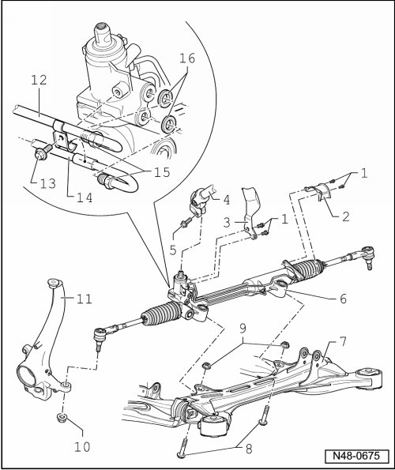

Steering Gear Assembly Overview
Steering Gear Assembly Overview

1 Bolt
• M6 x 16.
• 10 Nm.
2 Shield
3 Shield
4 Universal joint
5 Bolt
• M10 x 35.
• 40 Nm + 90° additional turn
• Always replace after removal.
6 Power steering gear
• Removing and installing, refer to --> [ Power Steering Gear ] Power Steering Gear.
For vehicles with servotronic:
• servotronic solenoid valve (N119)
7 Subframe
8 Bolt
• M12 x 1.5 x 80.
• 90 Nm + 90° additional turn.
• Always replace after removal.
9 Self locking nut
• M12 x 1.5.
• Always replace after removal.
10 Self locking nut
• M14 x 1.5.
• 90 Nm.
• Always replace after removal.
11 Wheel bearing housing
• Conical bores must be free of grease and oil.
• If necessary, clean using dry cloth, do not use cleaning agents.
• Different versions for 16" and 17 ", 18" and 18" plus wheels.
12 Pressurized line
13 Bolt
• M6 x 12.
• 9 Nm.
14 Return line
15 Union fitting, 30 Nm
16 Sealing ring
• Replace.